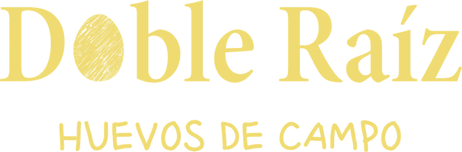
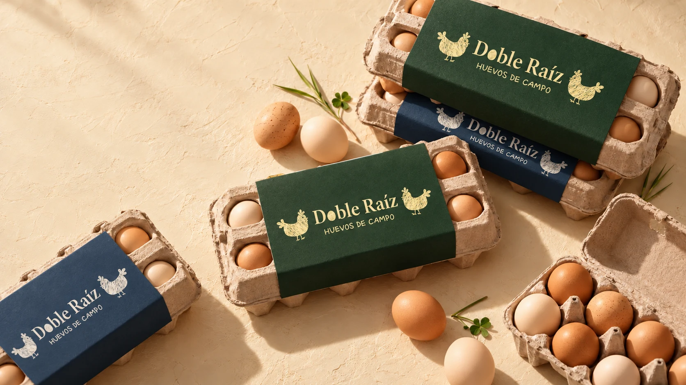
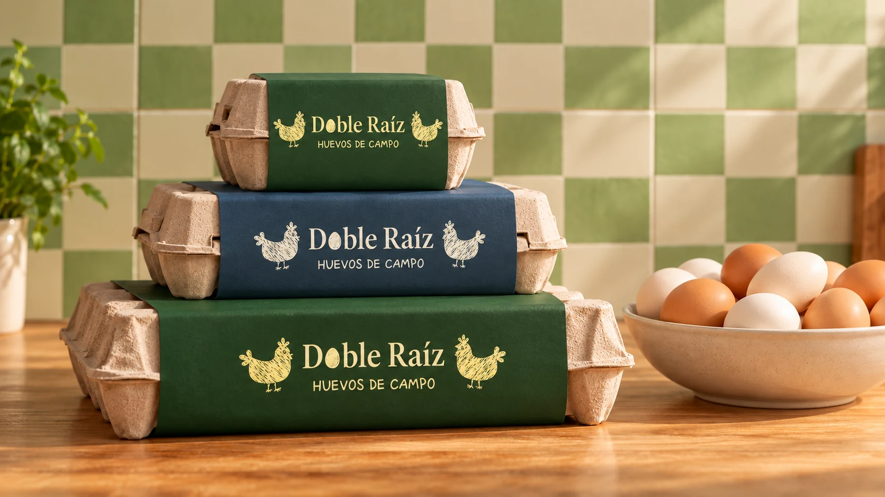

Reciben nutrientes
Cada mañana las gallinas acceden a alimento fresco: granos, hierbas y lo que encuentran en el campo.

HUEVOS DE CAMPO
Somos Doble Raíz. Una historia compartida, una mirada consciente y mucho por contarte sobre lo que elegís llevar a tu mesa.
EL ORIGEN A LA VISTA
NUESTRO ORIGEN
Todo empieza acá.Doble Raíz nace de una idea compartida entre dos hermanos: acercarte a lo que hay detrás de cada huevo.
Conocer su procedencia. Entender cómo se produce. Darle lugar al bienestar de las gallinas y al respeto por su entorno.
Bienestar, calidad y conciencia son los valores que guían nuestra propuesta.
Conocé nuestra miradaLAS GALLINAS
Nuestra manera de pensar el producto empieza por las gallinas.
El bienestar y el respeto por sus ciclos y su entorno forman parte de los principios de Doble Raíz.
Describe un sistema de alojamiento sin jaulas. No implica, por sí solo, acceso al exterior. Las condiciones específicas de Doble Raíz están pendientes de validación para esta versión.
Cada mañana las gallinas acceden a alimento fresco: granos, hierbas y lo que encuentran en el campo.
Con luz natural, cada gallina respeta su ciclo de sueño real. Sin iluminación artificial que altere su ritmo.
Durante todo el día tienen acceso libre a agua limpia, forraje y espacio para buscar su propio alimento.
Salen al exterior, picotean, se mueven y viven como gallinas. El espacio es parte de nuestra propuesta.
El bienestar de cada gallina se refleja en sus huevos. Sin estrés, sin apuro, con un entorno que respetan.
Recolección a mano, trazabilidad completa. Sabés exactamente de dónde viene lo que elegís comer.
NUESTROS HUEVOS · EL ORIGEN A LA VISTA

CERCA DE TU MESA
Buscá Doble Raíz en tu próxima compra.
Estamos preparando el listado de comercios y localidades.
PARA COMERCIOS Y DISTRIBUIDORES
¿Querés acercar Doble Raíz a tus clientes? Conversemos sobre tu comercio y dónde estás.
Quiero vender Doble RaízPARA CONOCERNOS MEJOR
Esta página es institucional. No tomamos pedidos ni pagos desde el sitio. Los puntos de venta y canales de consulta se incorporarán cuando estén confirmados.
No son equivalentes. El alojamiento sin jaulas y el acceso al exterior son condiciones distintas. Publicaremos el detalle del sistema de Doble Raíz una vez validado.
Estamos confirmando las presentaciones disponibles. La imagen de esta propuesta es conceptual y no constituye un catálogo de productos.
El canal comercial está en preparación. Cuando esté habilitado, podrás consultar indicando tu localidad y el tipo de comercio.